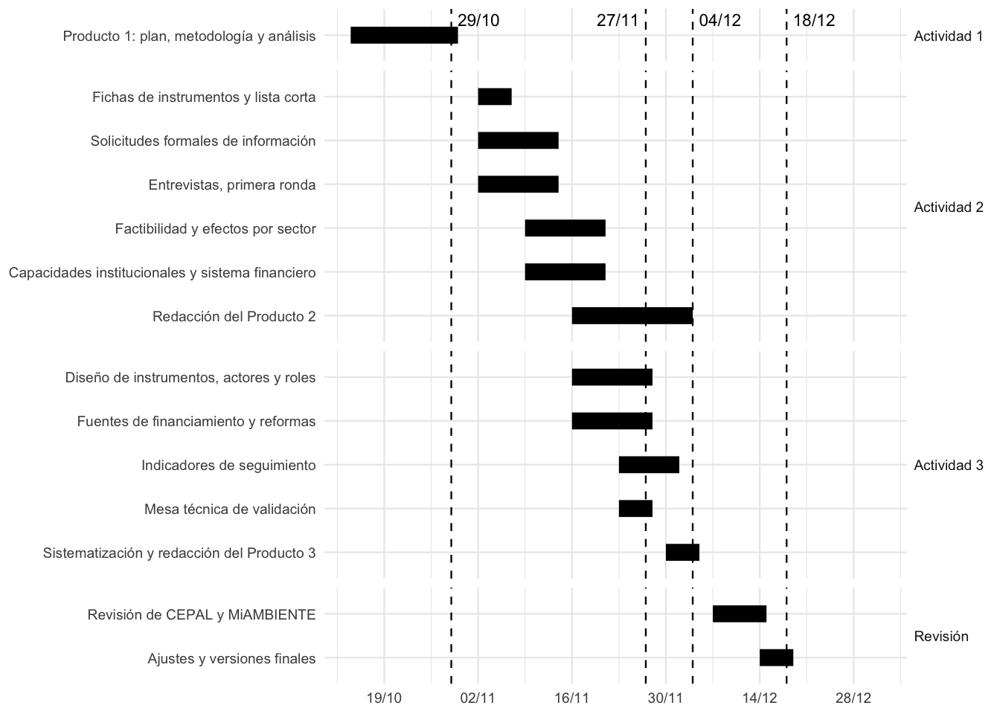

Actividad | Tareas | Resultado | Actores que intervienen |
|---|---|---|---|
Actividad 1 | Plan de trabajo, metodología, análisis sectorial con eslabonamientos y propuesta de catorce instrumentos | Producto 1, que se entrega el 29 de octubre | Consultor; supervisión de CEPAL; MiAMBIENTE |
Actividad 2 | Fichas normalizadas de instrumentos y lista corta; evaluación de factibilidad por criterio; análisis de efectos por sector; capacidades institucionales; análisis del sistema financiero | Producto 2: informe de factibilidad y capacidades con matriz de evaluación | Consultor; MiAMBIENTE; MEF; MICI; superintendencias; banca pública y privada; AAUD; INEC |
Actividad 3 | Diseño de instrumentos; actores y roles; mapeo de fuentes de financiamiento; reformas requeridas; indicadores; articulación con la Ley 502; mesa técnica | Producto 3: Hoja de Ruta Nacional para el Financiamiento de la Economía Circular y sistematización de la mesa técnica | Consultor; MiAMBIENTE; MEF; MICI; sector privado; academia; sociedad civil |
Revisión | Comentarios de CEPAL y de MiAMBIENTE; ajustes; presentación de cada producto | Versiones finales y presentaciones | Supervisión de CEPAL; MiAMBIENTE |
Plan de trabajo de la consultoría sobre instrumentos económicos para la economía circular en Panamá
Producto 1, Actividad 1: plan de trabajo
Resumen ejecutivo
Este documento presenta el plan de trabajo de la consultoría sobre instrumentos económicos para aumentar los flujos de recursos hacia la economía circular en Panamá. La consultoría atiende la solicitud de asistencia técnica del Ministerio de Ambiente (MiAMBIENTE) a la CEPAL para implementar la Ley 502 de 2025 (Asamblea Nacional de Panamá, 2025), con apoyo del programa de cooperación CEPAL-BMZ/GIZ “Promoviendo la Economía Circular”.
El plan parte de que el Producto 1 (plan, metodología y análisis sectorial) se entrega el 29 de octubre de 2026 y de que el trabajo de las Actividades 2 y 3 comienza el lunes 2 de noviembre. Los borradores de los Productos 2 y 3 se completan en la primera semana de diciembre, y el resto de diciembre se destina a revisiones y ajustes, de modo que las versiones finales se entregan el 18 de diciembre.
Los hitos principales son:
- 29 de octubre. Entrega del Producto 1.
- 2 al 20 de noviembre. Fichas de instrumentos, solicitudes de información, entrevistas y análisis de factibilidad, capacidades y sistema financiero.
- Semana del 23 al 27 de noviembre. Mesa técnica de validación con actores del sector público, privado, académico y de la sociedad civil.
- 4 de diciembre. Borradores completos de los Productos 2 y 3.
- 7 al 18 de diciembre. Revisión de CEPAL y MiAMBIENTE, ajustes y entrega de las versiones finales.
El plan identifica los riesgos que podrían desplazar el calendario (reglamentación en curso de la Ley 502, disponibilidad de actores a fines de noviembre, tiempos de entrega de datos) y las medidas para reducirlos. La más importante es adelantar, desde la segunda semana de noviembre, los insumos con traducción reglamentaria directa, para que el trabajo de la consultoría pueda alimentar el reglamento mientras se elabora.
Lista de cuadros y figuras
Cuadros
- Cuadro 1: Tareas, responsables y resultados por actividad
- Cuadro 2: Hitos y entregables
- Cuadro 3: Solicitudes de información
- Cuadro 4: Riesgos y medidas de mitigación
- Cuadro 5: Glosario de siglas
Figuras
- Figura 1: Cronograma de la consultoría, octubre a diciembre de 2026
1 Introducción
La consultoría desarrolla instrumentos económicos para aumentar los flujos de recursos hacia la economía circular y potenciar inversiones en iniciativas de circularidad en Panamá, incluidos los modelos de responsabilidad extendida del productor (REP). Se ejecuta bajo la supervisión de la División de Desarrollo Sostenible y Asentamientos Humanos de la CEPAL y en coordinación con MiAMBIENTE.
Este plan responde a la primera parte de la Actividad 1. Complementa la metodología de la consultoría y el análisis de los sectores priorizados, que se presentan en documentos separados. Describe qué se hará, en qué orden, con qué insumos, quién interviene y cómo se gestionan los riesgos, y está escrito para que las contrapartes y los actores a consultar conozcan los tiempos en los que se les solicitará información y participación.
2 Objetivos
2.1 Objetivo del plan
Organizar la ejecución de las tres actividades de la consultoría de modo que los productos se entreguen a tiempo para su revisión y que los actores institucionales participen en las fechas en que están disponibles.
2.2 Objetivos específicos
- Fijar el calendario de las Actividades 2 y 3 a partir de la entrega del Producto 1.
- Concentrar el trabajo con actores y la validación en las fechas de mayor disponibilidad institucional.
- Identificar las solicitudes de información que deben formalizarse de inmediato.
- Anticipar los riesgos de calendario y de datos, con medidas de mitigación.
3 Antecedentes
3.1 Alcance
La consultoría produce tres productos, uno por cada actividad. El Producto 1 contiene el plan de trabajo, la metodología y el análisis de los sectores de política priorizados, y la propuesta de instrumentos con experiencia internacional. El Producto 2 evalúa la factibilidad política y técnica de los instrumentos, las capacidades institucionales y el sistema financiero nacional. El Producto 3 es la Hoja de Ruta Nacional para el Financiamiento de la Economía Circular, que incluye al menos una mesa técnica de validación.
3.2 Condiciones informadas por la contraparte
En las reuniones de arranque con MiAMBIENTE se informaron condiciones que ordenan el plan:
- La reglamentación de la Ley 502 está en proceso, con un borrador inicial, y la meta es tenerla lista antes del cierre del año. La consultoría se ejecuta en esa ventana, de modo que sus insumos pueden alimentar el reglamento si llegan a tiempo.
- El Consejo Nacional de Economía Circular, creado por la ley (Asamblea Nacional de Panamá, 2025, art. 8), todavía no está integrado y su primera sesión se prevé para el próximo año. La interlocución de corto plazo es directamente con MiAMBIENTE.
- Los sectores de política son los de la Hoja de Ruta de Economía Circular (Ministerio de Ambiente de Panamá y Programa de las Naciones Unidas para el Desarrollo, 2024) y se mantienen en términos generales.
- La facilitación de datos no representa un problema si se solicita con las formalidades pertinentes. Conviene incorporar al Ministerio de Economía y Finanzas (MEF), en particular la Dirección de Crédito Público, para el análisis de fuentes de financiamiento y bonos temáticos. El MEF tiene además una consultoría paralela sobre administración sostenible, de la que podría obtenerse información.
- El Ministerio de Comercio e Industrias (MICI) opera incentivos a los que pueden articularse los instrumentos de circularidad, entre ellos el sello “Hecho en Panamá”.
- Una nueva norma otorga al Ministerio competencia para preparar al sector y formalizar el reciclaje a nivel local; su identificación precisa está pendiente.
3.3 Elementos del contexto financiero
Panamá cuenta con una Taxonomía de Finanzas Sostenibles (Superintendencia de Bancos de Panamá et al., 2024) y con un Marco de Financiamiento Sostenible de la República (Ministerio de Economía y Finanzas de Panamá, 2024), que son piezas sobre las cuales construir en vez de duplicar. El contacto con las superintendencias del sector financiero y con el grupo de trabajo de finanzas sostenibles forma parte de las tareas de la Actividad 2.
4 Principios del plan
- Insumos tempranos para el reglamento. Los contenidos con traducción reglamentaria directa se adelantan a mediados de noviembre, sin esperar los borradores completos.
- Solicitudes de datos en la primera semana. Los tiempos de respuesta de las instituciones condicionan el análisis, por lo que las solicitudes formales se envían entre el 2 y el 6 de noviembre.
- Participación a lo largo del proceso. Las entrevistas comienzan en la semana del 2 de noviembre, y la mesa técnica funciona como validación final de un proceso de consulta que ya está en marcha.
5 Plan por actividad
La Cuadro 1 resume las tareas, sus resultados y los actores que intervienen. Las fechas se muestran en la sección de cronograma.
Fuente: elaboración propia.
5.1 Actividad 2: factibilidad y capacidades
Entre el 2 y el 6 de noviembre se convierten los catorce instrumentos propuestos en el Producto 1 en fichas normalizadas y en una lista corta, a partir de los criterios de la metodología. Al mismo tiempo se envían las solicitudes de información y se programa la primera ronda de entrevistas con MiAMBIENTE, el MEF, el MICI y las superintendencias. Entre el 9 y el 20 de noviembre se evalúa la factibilidad de cada instrumento, se estima su efecto por sector con el modelo de precios de insumo-producto cuando los datos lo permiten, y se analizan las capacidades de gobierno y del sistema financiero. La redacción del Producto 2 comienza el 16 de noviembre y su borrador se completa el 3 de diciembre.
5.2 Actividad 3: Hoja de Ruta
El diseño de la Hoja de Ruta comienza el 16 de noviembre, con los instrumentos que superen el filtro de factibilidad. Se definen los actores y sus roles, se mapean las fuentes de financiamiento nacionales e internacionales y se identifican las reformas normativas, regulatorias e institucionales necesarias. Los indicadores de seguimiento se diseñan en coordinación con la plataforma de indicadores de la Ley 502 (Asamblea Nacional de Panamá, 2025, art. 11). La mesa técnica de validación se realiza en la semana del 23 al 27 de noviembre. Sus aportes se sistematizan entre el 30 de noviembre y el 4 de diciembre, con la redacción del Producto 3.
5.3 Insumos adelantados para el reglamento
Dado que la reglamentación de la Ley 502 se encuentra en elaboración, la consultoría prepara a mediados de noviembre un documento breve con los contenidos que pueden traducirse en normas: flujos prioritarios sugeridos para la REP, estructura de tarifas y criterios de ecomodulación, obligaciones de registro y reporte, y condiciones de trazabilidad. Ese documento se entrega a MiAMBIENTE antes de los borradores completos y es independiente de ellos.
6 Cronograma
La Figura 1 muestra el cronograma de octubre a diciembre. Los hitos se resumen en el Cuadro 2.

Fuente: elaboración propia. Las líneas verticales marcan los hitos del Cuadro 2.
Fecha | Hito | Entregable |
|---|---|---|
29 de octubre | Entrega del Producto 1 | Plan de trabajo, metodología y análisis sectorial, con las bases de datos y memorias de cálculo |
2 al 6 de noviembre | Solicitudes formales de información | Cartas a MEF, superintendencias, MICI, AAUD, INEC y otras entidades |
Mediados de noviembre | Insumos para el reglamento | Documento breve con contenidos de traducción reglamentaria directa |
23 al 27 de noviembre | Mesa técnica de validación | Presentación de la propuesta y registro de aportes |
3 y 4 de diciembre | Borradores de los Productos 2 y 3 | Informes completos para revisión |
7 al 14 de diciembre | Revisión | Comentarios de CEPAL y MiAMBIENTE |
18 de diciembre | Versiones finales | Productos 2 y 3 y presentaciones de cada producto |
Fuente: elaboración propia.
Los feriados nacionales de noviembre reducen los días hábiles de varias semanas del cronograma. El calendario debe confirmarse con las contrapartes al programar entrevistas y la mesa técnica.
7 Misión a Panamá y mesa técnica
La consultoría contempla un viaje a Ciudad de Panamá en la última semana de noviembre, del 23 al 27. La visita se justifica si permite combinar en la misma semana la mesa técnica de validación con reuniones bilaterales con MiAMBIENTE, el MEF y las superintendencias. Si el viaje no procede, la mesa puede realizarse de forma híbrida.
La mesa técnica reúne al sector público, el sector privado, la academia y la sociedad civil. Las redes y plataformas de economía circular que operan en el país ofrecen un canal para convocar a las organizaciones participantes, y MiAMBIENTE valida la lista de invitados. La agenda presenta los instrumentos de la lista corta, las condiciones habilitantes y la secuencia propuesta, y recoge comentarios por escrito. Los aportes se sistematizan en un documento que registra qué se recibió, qué se incorporó y por qué se descartó lo demás.
8 Gestión de datos y solicitudes de información
Las solicitudes de información se formalizan entre el 2 y el 6 de noviembre, para que las respuestas lleguen antes del análisis de factibilidad. El Cuadro 3 resume las principales.
Institución | Información solicitada | Uso en la consultoría |
|---|---|---|
MEF, Dirección de Crédito Público | Marco de financiamiento sostenible, emisiones temáticas, espacio fiscal, información de la consultoría de administración sostenible | Fuentes de financiamiento y bonos temáticos (Actividades 2 y 3) |
Superintendencias del sector financiero y grupo de trabajo de finanzas sostenibles | Resultados del piloto de la taxonomía, cartera verde, productos financieros vigentes | Análisis del sistema financiero y elegibilidad de proyectos circulares |
MICI | Incentivos vigentes, sello "Hecho en Panamá", registros de industrias | Articulación de instrumentos con la institucionalidad existente |
AAUD y MiAMBIENTE | Datos de generación y composición de residuos, sitios de disposición, registros de gestores, segregadores y recicladores | Potencial de recuperación y diseño de REP |
INEC | Microdatos de la Encuesta de Mercado Laboral por división de actividad, conciliación de empleo en las secciones D y E, actualización de la matriz insumo-producto | Empleo por género y formalidad; eslabonamientos |
Autoridad de competencia | Estudios sectoriales de mercado en cemento, plásticos, residuos y distribución eléctrica | Concentración y barreras de entrada |
Fuente: elaboración propia a partir de las brechas del análisis sectorial.
9 Gestión de riesgos
Riesgo | Efecto | Mitigación |
|---|---|---|
El reglamento de la Ley 502 avanza antes que los productos | Los instrumentos propuestos llegan después de las decisiones normativas | Insumos adelantados a mediados de noviembre; interlocución directa con MiAMBIENTE |
Baja disponibilidad de actores a fines de noviembre y en diciembre | Entrevistas y mesa técnica con poca participación | Primera ronda de entrevistas desde el 2 de noviembre; agenda de la mesa confirmada a comienzos de noviembre; respuestas escritas como alternativa |
Demora en la entrega de datos | Análisis cuantitativo incompleto | Solicitudes formales en la primera semana; tratamiento alternativo documentado para cada brecha |
Datos insuficientes sobre recicladores y concentración | Análisis cualitativo en lugar de cuantitativo | Se trata como hallazgo y como agenda de formalización; entrevistas dirigidas |
Consejo Nacional de Economía Circular no integrado | Falta una instancia de validación formal | La Hoja de Ruta se redacta como insumo para la primera agenda del Consejo |
Feriados de noviembre | Reducción de días hábiles | Calendario confirmado con las contrapartes; holgura de la segunda semana de diciembre |
Viaje a Panamá no viable | La mesa técnica pierde interacción presencial | Mesa híbrida; reuniones bilaterales virtuales |
Fuente: elaboración propia.
10 Coordinación y control de calidad
La consultoría mantiene reuniones semanales de seguimiento con la CEPAL y un canal de coordinación con MiAMBIENTE. Se acuerdan con MiAMBIENTE los formatos y plazos de las solicitudes de datos. También se coordina con la consultoría paralela de sistema de información e indicadores, para que los indicadores de seguimiento de la Hoja de Ruta sean los mismos que alimenten la plataforma de la Ley 502.
Todas las cifras de los productos provienen de bases de datos con memorias de cálculo públicas, y cada informe se revisa contra esas memorias antes de su entrega. Las referencias se verifican contra la fuente, y lo que no pudo verificarse se marca así en el texto.
Glosario de siglas
Sigla | Significado |
|---|---|
AAUD | Autoridad de Aseo Urbano y Domiciliario |
CEPAL | Comisión Económica para América Latina y el Caribe |
INEC | Instituto Nacional de Estadística y Censo |
MEF | Ministerio de Economía y Finanzas |
MICI | Ministerio de Comercio e Industrias |
MiAMBIENTE | Ministerio de Ambiente de Panamá |
REP | Responsabilidad extendida del productor |